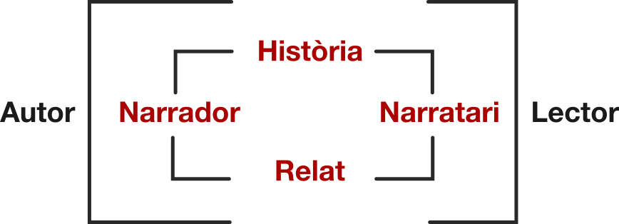

Pas 7. Clic! Encaixar les peces
Una novel·la són paraules. Mercè Rodoreda
Som-hi, la lectura continua. Ens centrem ara a llegir literatura críticament, és a dir, a observar i entendre com està escrita una novel·la per comprendre’n millor el sentit i gaudir-ne més la lectura.
El joc Mòbil trencat ha estat compost a partir del capítol “Els nens” de la novel·la Mirall Trencat de Mercè Rodoreda. Aquesta novel·la, publicada l’any 1974, narra la història de tres generacions d’una nissaga familiar.
Mirall trencat no és en cap cas una novel·la de gènere, tot i que pot ser un exemple de com les obres literàries poden incorporar patrons i elements genèrics per, anar més enllà d’una forma i d’un tema fixats, ja que, en aquesta obra, Mercè Rodoreda incorpora algunes de les característiques de la novel·la de fulletó i romàntica, com ara l’estructura fragmentària i l’atenció a les relacions amoroses, però les elabora de manera complexa i amb profunditat, a fora del patró esquemàtic i tòpic.
Igualment, al capítol “Els nens”, la manera com es tracta la violència i el crim són molt lluny de la manera com es tracta a les novel·les del gènere negre i policíac. Res a veure-hi, doncs!
En aquest pas i en el següent llegiràs de manera guiada “Els nens”, un capítol que pot funcionar de manera autònoma, com una peça narrativa completa.
Es tracta de la lectura d’un relat literari narratiu de ficció, amb el qual, doncs, cal que estableixis un pacte que ja coneixes, un pacte ficcional, perquè allò que hi trobaràs no és real, tot i que n’acceptarem la veritat a dins del relat.
Ampliem l’esquema sobre el fet literari entès com un procés de comunicació entre un autor i el lector. Aclarim alguns conceptes clau que permeten millorar milloren la interpretació i el gaudi de la lectura
Autor: és la persona que escriu, que es dedica professionalment a escriure: novel·les, contes o relats breus, poesia, assaig, teatre, guions, etc.
Mercè Rodoreda és l’autora de Mirall trencat. I és també un dels autors més importants de la narrativa catalana i europea del segle XX.
Lector: és la persona que llegeix, que de manera conscient i deliberada dedica part del seu temps a la lectura de textos literaris diversos.
Tu seràs ara el lector o la lectora de la seva obra.
Narrador: és una figura de l’àmbit del relat, creada per l’autor però diferent d'ell. Cal evitar identificar-los. La veu narradora pertany al relat, on es manifesta textualment, no a la vida real..
Recordes l’inici de La mala dona del Pas 4? Allà la veu narradora era la Mort, que encetava un discurs amenaçador i inquietant en primera persona (“soc”, “puc ser”).
Narratari: és una figura de l’àmbit del relat, el destinatari d’allò que conta la veu narradora. Pot no ser explícit al text i no s’identifica amb el lector,
A La mala dona el narratari, que és a dins del relat encara que no el puguem detectar perquè no n’hi ha cap rastre al text, és el destinatari intern d’aquest discurs.
És natural -i els autors ho saben!- que, en aquesta mena de textos en què la veu narradora s’adreça a un “tu” que no és explícit al relat, el lector s’hi senti identificat i interpel·lat directament.
Heus aquí la força d’atracció d’aquest mecanisme narratiu!
Història: és una successió ordenada de fets relacionats lògicament entre si que tenen lloc en un temps i en un espai determinats.
A l’inici de Demà i demà i demà, també al Pas 4, trobem el Sam i la seva història des que és petit fins que temps després es converteix en un Constructor Professional de Mons i com els seus diversos noms evidencien aquestes etapes successives.
Per tant, la història és la trajectòria del noi al llarg d’un temps que imaginem deu durar anys i en el qual els fets s’han esdevingut cronològicament, l’un darrere de l’altre.
Relat: és la narració concreta d’una determinada història, que, en el cas de la literatura, queda fixada mitjançant la paraula, normalment escrita, i que adopta formes com ara la novel·la o el conte.
En canvi, al relat de Demà i demà i demà, la història del Sam apareix alterada cronològicament (es desordenen aquestes etapes) i, alhora, es resumeix en poques línies el que sense dubte ha estat un període de molts anys.
De la mateixa manera, en el paràgraf següent, en començar la narració pròpiament dita de la trajectòria del Sam no ho fa des de la infantesa sinó a partir d’un moment en què el personatge és un estudiant adult.
Una història és una successió de fets. Un relat literari fixa materialment aquesta història en ser narrada i adoptar una forma o una altra, com ara la de novel·la o la de conte.
Així, hi ha molts possibles relats per a una única història. De fet, hi ha qui diu que la història de la literatura és una reiteració continuada de les mateixes històries en la forma de molts relats diferents.
Hi ha moltes maneres d’explicar una mateixa història, segons la intenció, de fer més rellevants uns fets que no uns altres, l’atenció a unes veus protagonistes per sobre de l’atenció a d’altres, l’adopció d’un punt de vista determinat, una mirada personal sobre el món o el gust per una manera de dir o d’escriure.
Això és el que diu Mercè Rodoreda al pròleg de Mirall trencat sobre la idea i allò que la va moure per crear l’obra:
“Els carrers han estat sempre per a mi font d’inspiració, com algun tros d’una bona pel·lícula, com un parc en tot l’esclat de la primavera o gebrat i esquelètic a l’hivern, com la bona música en el moment precís, com la cara de certes persones absolutament desconegudes que tot d’una creues, que t’atreuen i que no veuràs mai més.
Una família, una casa abandonada, un jardí desolat, idea pura del jardí de tots els jardins… Tenia ganes de fer una novel·la on hi hagués tot això. M’agradava pensar que la família seria rica, amb una senyora fora de la casta. Desnivellada, d’origen modest. El personatge ideal el vaig descobrir en Teresa Goday que en el moment de formar-se en el meu esperit no es deia Teresa ni es deia Goday. No tenia nom.
La Perla del Llac és un restaurant a la vora del Leman. Tancat a l’hivern, a l’estiu és un lloc encantador. (...) Una tarda, a la posta de sol, una senyora ja gran baixà d’un Rolls, s’acostà al muret del llac i s’hi quedà tan immòbil que no semblava de debò. [...] Una imatge de refinament, una mica fora del món, una mica diferent de tot. En crear Teresa Goday de Valldaura, li vaig donar els ulls de la dama de Leman.
Naturalment, sentia que la novel·la seria difícil, que exigiria molts personatges, que seria eriçada de dificultats.
Em calia un títol sense saber ben bé què passava a la novel·la. La casa abandonada, Història d’una família, Temps passat, Tres generacions. Tots eren inexpressius. [...] Des del meu reialme d’autor explicava els meus personatges, sabia què pensaven, els feia parlar amb la meva veu.
La novel·la, per altra banda, se m’anava poblant de gent. M’hi perdia. Em vaig veure obligada a fer-me un fitxer, cosa que em va contrariar perquè pensava que em robaria l'espontaneïtat.
Darrera de la casa, quan jo era petita, el que ara és carrer de Balmes era la riera de Sant Gervasi de Cassoles. A l’altra banda de la riera hi havia el parc abandonat del marquès de Can Brusi. Des del menjador es veia frondós d’arbres centenaris. Ple de rossinyols a les nits d’estiu. Anava de la plaça Molina fins a l’Ateneu de Sant Gervasi a tocar del que ara és Mitre. Al capvespre se sentien crits de paons. Aquest parc, idealitzat, és el parc de la torre dels Valldaura. El jardí de tots els jardins.”
Mirall trencat, Mercè Rodoreda. Edicions 62, 1983.
Fixa’t que en aquests fragments veiem l’autora parlar del procés de gestació i de creació de la seva novel·la.
És clar que aquesta obra sorgeix d’idees i gustos propis, que s’inspira en persones i llocs reals per crear els espais i els personatges principals, com també que Mercè Rodoreda té clar quina mena d’història vol explicar. Però, és un relat de ficció allò que escriu: una novel·la que pren una forma concreta, amb una estructura de tres parts dividides en capítols, un dels quals és “El nens” (capítol XVII de la segona part).
En la novel·la els fets no sempre apareixen en ordre cronològic ni des del punt de vista del mateix personatge; la veu narradora i la veu dels personatges seran més o menys presents en cada part i en cada capítol, i la llengua de creació i l’estil de l’autora s’han treballat per estar en consonància amb aquest món creat per ella.
Els lectors crítics saben parar atenció a la manera com, a través del relat, l’autor desenvolupa i fixa la història.
Quins són els elements que ajuden a comprendre com és fet un relat?